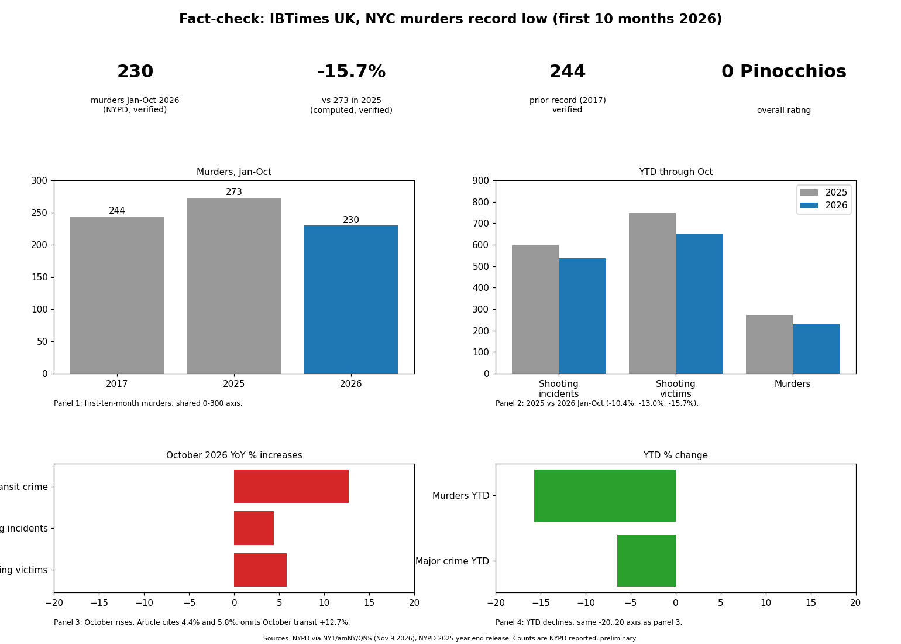

The article's headline numbers match NYPD data: 230 murders, Jan 1-Oct 31 2026, a record for the period (prior low 244 in 2017), 15.7% below 273 in 2025 (43 fewer). Shooting incidents 536 vs 598 (-10.4%), victims 649 vs 746 (-13.0%), major crime -6.5%, October major crime -8.6%, transit +2.2% YTD, October shootings +4.4% and victims +5.8%: all confirmed.
| Claim | Verdict | Source |
|---|---|---|
| 230 murders, record, prior 244 (2017) | True | NY1, QNS |
| -15.7% vs 273 | True (43 fewer per amNY; 230/273) | amNY |
| Shootings 536 vs 598; victims 649 vs 746 | True | NY1, QNS |
| Major crime -6.5% (102,726 to 96,059); Oct -8.6% | True (percent verified; counts arithmetic consistent) | NY1 |
| Transit +2.2%; Oct shootings +4.4%, victims +5.8% | True | amNY |
| Tisch "data-driven strategy" | True | NY1 |
| 2025: 305 murders, -20.2% vs 382 | True | NYPD Jan 6 2026 release |
| 2023 391, 2024 377 | Partly: 391 appears in some tallies; 377 unconfirmed (382 per NYPD) | NYPD; web search |
| 26 gang takedowns, 4,500+ guns | Not checkable here (25 and 3,259 as of Aug 11) | NYC.gov / News12 |
| Murders falling since 2022 | True (438 in 2022 to 305 in 2025) | NY1 / NYPD |